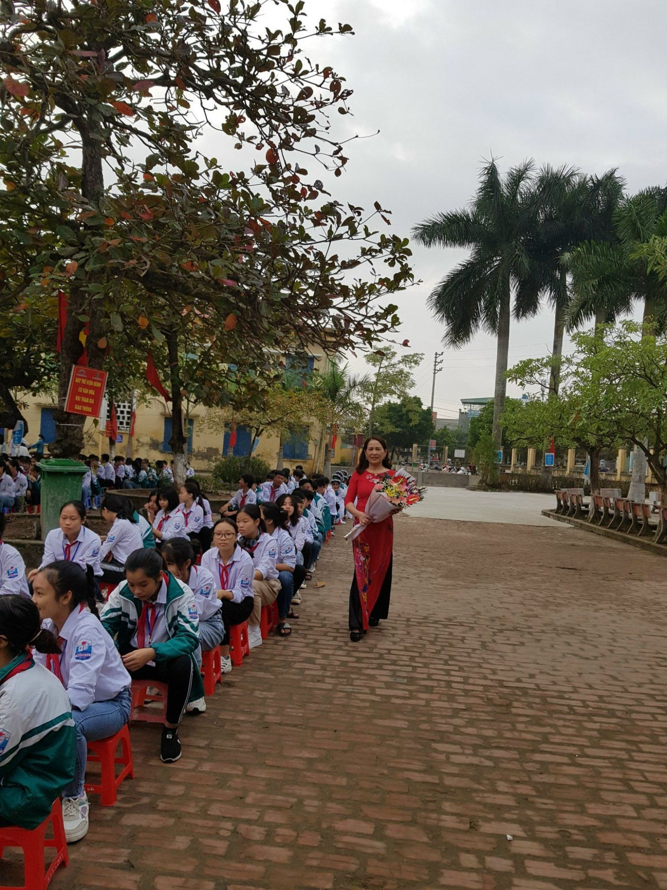

CHIA TAY CÔ GIÁO VŨ THỊ MINH NGUYỆT VỀ NGHỈ CHẾ ĐỘ
Trong cuộc đời mỗi con người ai cũng phải trải qua thời gian học tập, làm việc và đến lúc về hưu. Chắc chắn có biết bao kỷ niệm vui buồn, những ấn tượng không thể nào quên trong cuộc đời làm việc. Cô Vũ Thị Minh Nguyệt cũng như vậy sau khi học xong ngành sư phạm, với tuổi đôi mươi tràn đầy nhiệt huyết được điều về trường THCS Đông Phương (bây giờ liên trường là trường Phương Cường Xá) dạy học. Những buổi dạy đầu tiên đầy bỡ ngỡ đến những ánh mắt đầy thân thương của học trò, những đêm dài thao thức bên trang giáo án cũng như những ngày ôn luyện vào THPT mong sao các em được chắp cánh bay cao, bay xa.

Hình ảnh: Cô giáo Vũ Thị Minh Nguyệt
Trong hơn 30 năm công tác cô đã từng tham gia giảng dạy ở trường THCS Đông Phương, sau đó cô về công tác tại trường TH&THCS Nguyên Xá.
Trong quá trình công tác của mình, mặc dù cũng gặp không ít khó khăn như phải chăm sóc bố mẹ già yếu, các con còn nhỏ, bản thân đau ốm nhưng cô đã luôn cố gắng vươn lên vượt qua khó khăn để hoàn thành tốt nhiệm vụ của tổ phó và một giáo viên, được đồng nghiệp tin yêu, phụ huynh và các em học sinh quý mến. Với sự cố gắng đó cô đã đạt những thành tích đáng kể nhiều năm đạt giáo viên dạy giỏi cấp huyện, cấp tỉnh.
Trong cuộc sống đời thường cô là người chị, người đồng nghiệp luôn thẳng thắn góp ý cho tổ chức, cho đồng nghiệp. Cô luôn gần gũi, thân thiện, cùng nhau chia sẻ niềm vui, nỗi buồn, sẵn sàng giúp đỡ anh chị em.
Những thành tích đạt được của nhà trường và công đoàn trong nhiều năm qua ngoài sự phấn đấu của tập thể nói chung còn có sự đóng góp đáng kể của cô giáo Vũ Thị Minh Nguyệt. Thay mặt cho nhà trường và các thế hệ học sinh, chúng tôi ghi nhận và cảm ơn những đóng góp mà cô đã cống hiến cho sự nghiệp giáo dục và đào tạo nói chung, cho thầy và trò trường TH&THCS Nguyên xá nói riêng.
Hôm nay, cô Nguyệt nghỉ hưu, chúng ta thiếu đi một giáo viên luôn hết mình vì công việc, hết lòng thương yêu học sinh; học trò thiếu đi một cô giáo, một người mẹ đáng kính.
Trong thời gian chúng tôi được công tác cùng với cô chắc hẳn không thể tránh khỏi những lúc chúng ta chưa hài lòng về nhau. Trong buổi chia tay tình cảm này, cô hãy cho chúng tôi xin lại những gì chưa làm cho cô hài lòng và cô hãy giữ lại cho mình những gì tốt đẹp nhất trong những ngày tháng qua để làm kỉ niệm về một thời chúng ta đã cùng nhau công tác.
Vâng! Chia tay cô nhưng những tình cảm, những nghĩa tình vẫn còn đó, vẫn luôn đọng lại trong lòng của chúng ta. Tập thể trường TH&THCS Nguyên Xá vẫn luôn nhớ đến cô. Mong rằng, tuy đã nghỉ hưu nhưng cô vẫn luôn dành tình cảm cho nhà trường, có điều kiện mời cô ghé về thăm trường.
Một lần nữa, xin kính chúc cô và gia đình lời chúc sức khỏe, hạnh phúc.
NHỮNG HÌNH ẢNH TRONG BUỔI CHIA TAY
Hình ảnh: Thầy Nguyễn Hữu Hoàn - Bí thư chi bộ - Hiệu trưởng nhà trường tặng hoa và quà cô giáo
Hình ảnh: Thầy Hòa Quang Đức - Chủ tịch công đoàn nhà trường có bó hoa tươi thắm tặng cô
Hình ảnh: Cô Nguyễn Thị Hạnh đại diện tổ KHTN có món quà tặng cô
Hình ảnh: Cô Phạm Thị Yên thay mặt tổ KHXH có món quà tặng cô
Hình ảnh: Hội phụ huynh tặng quà cô